Angus
Raza bovina de carne, reconocida por su rusticidad, su docilidad y la calidad de su carne.

Cabaña Don NestorCría de Angus e Ile de France en Rocha, Uruguay.
Cabaña Don Nestor se dedica a la producción de Angus e Ile de France en el departamento de Rocha, sobre la Ruta 9.
Es un campo de trabajo donde la cría se hace con dedicación a cada animal y a la tradición rural del este uruguayo.
Campo abierto en Rocha
Raza bovina de carne, reconocida por su rusticidad, su docilidad y la calidad de su carne.
Raza ovina de origen francés, valorada por su buena conformación y su producción de carne.

Angus de ChafaloteNuestra cría de Angus lleva el nombre del paraje donde nace: la Picada de Chafalote.
Ruta 9, kilómetro 236, en la Picada de Chafalote, departamento de Rocha, Uruguay.
Escribinos para conocer los animales o coordinar una visita a la cabaña.